参考Alex白头海雕薄翼和长向羽纹，仅借鉴翼面组织，不改成鹰。收薄翼骨与羽面、铜臂节边；铜臂保留大体量，暗色身体、浅角爪与观察中心形成主次。
左旧右新：共同取景范围、相同机位；逐面采样真实PNG的软件图。
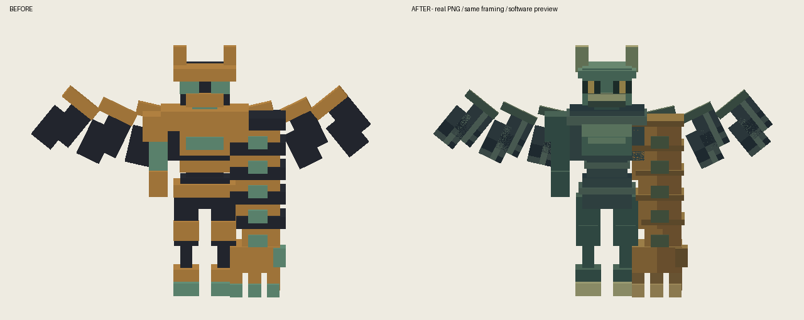
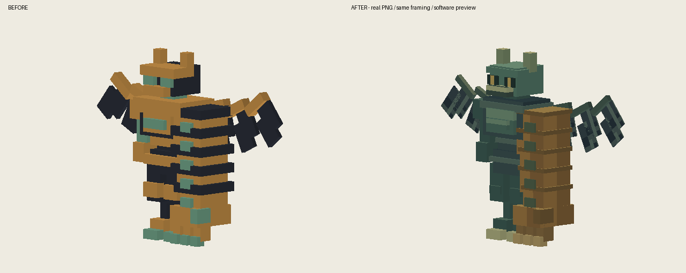
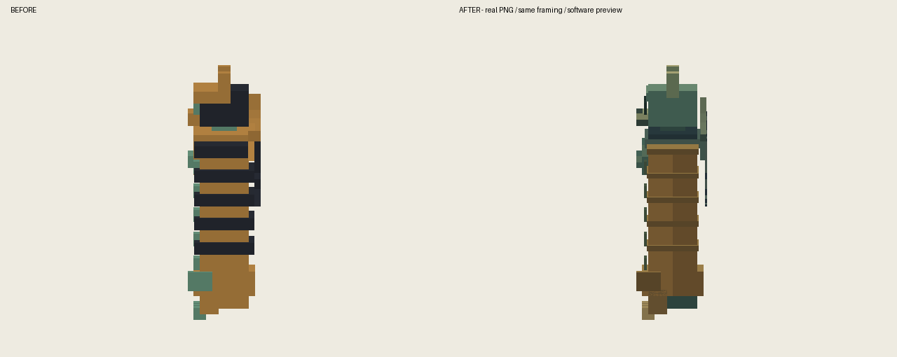
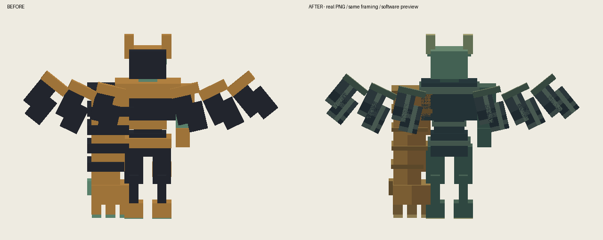
静音隔离存档；守卫批次检查正侧背、移动、攻击接触、特殊动作、受伤、倒地与重载。水鬼批次同样检查上述动作和重载。不是自然副本或多人战斗验收。
24-tongbi_feitian_yecha-front
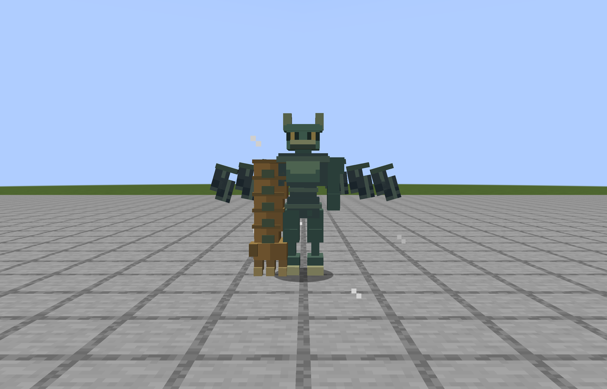
25-tongbi_feitian_yecha-45
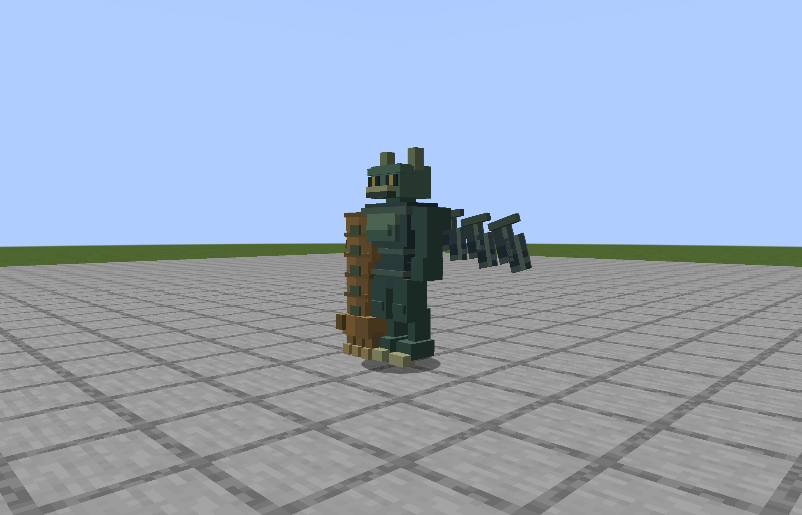
26-tongbi_feitian_yecha-side
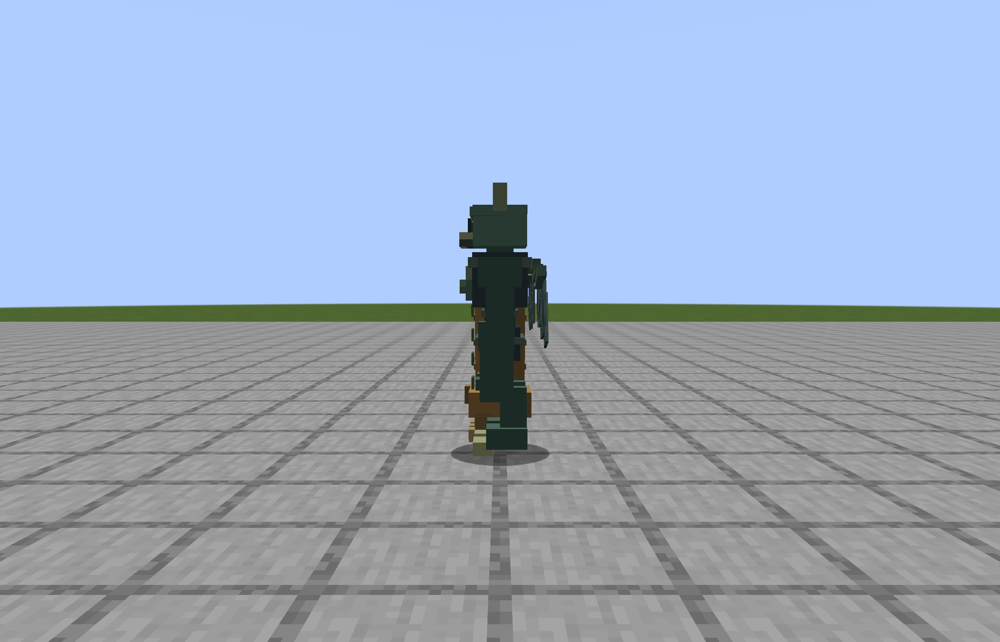
27-tongbi_feitian_yecha-back
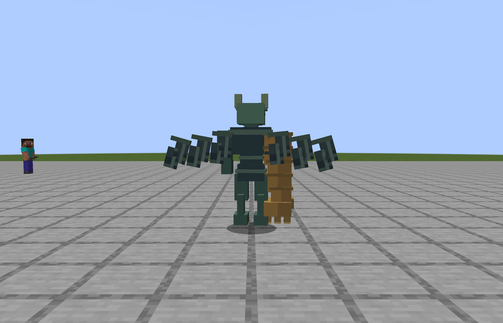
28-tongbi_feitian_yecha-walk
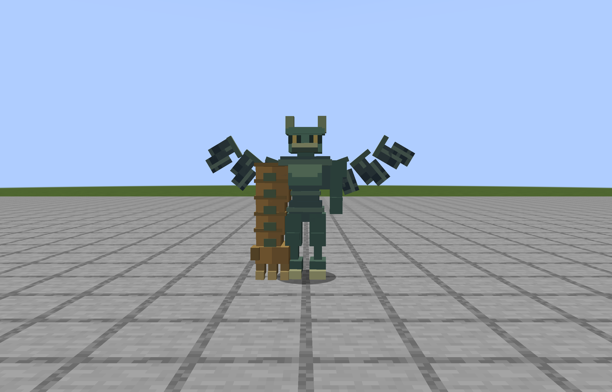
29-tongbi_feitian_yecha-run
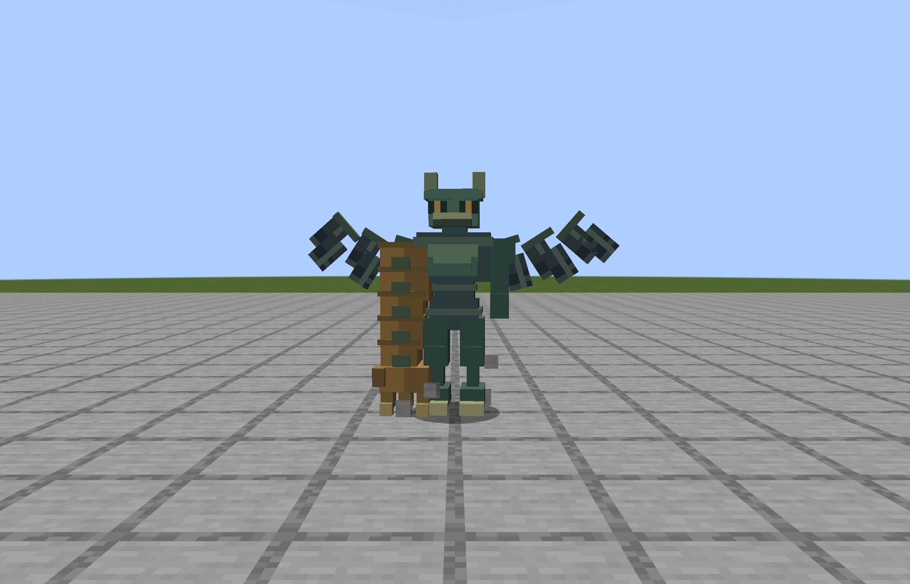
30-tongbi_feitian_yecha-attack-tell
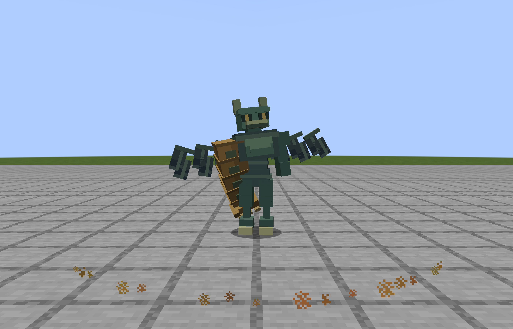
31-tongbi_feitian_yecha-attack-contact
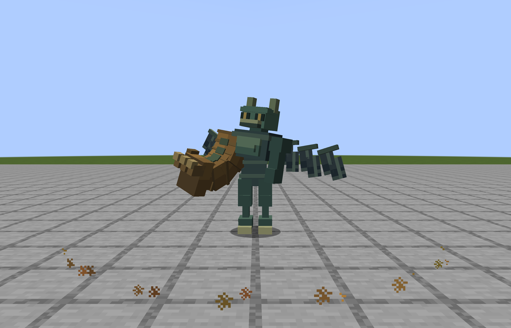
32-tongbi_feitian_yecha-special-tell
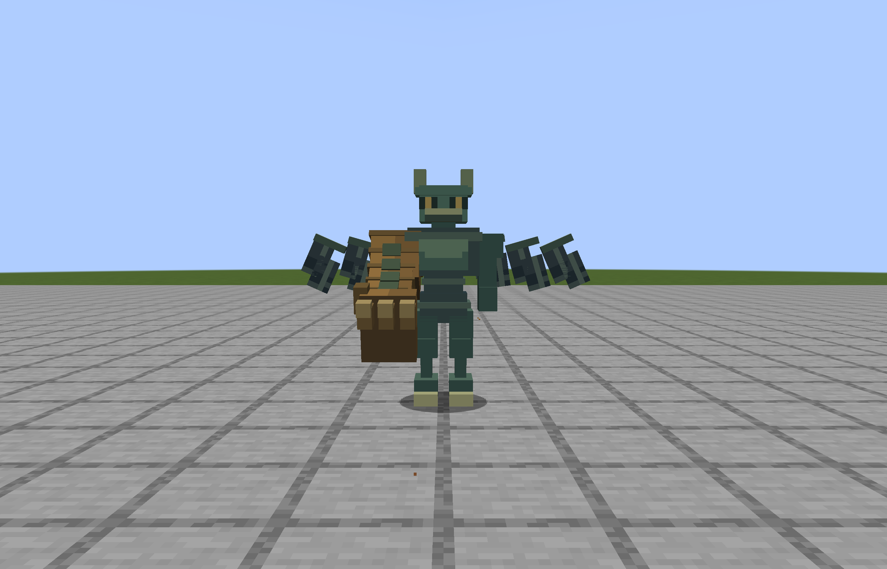
33-tongbi_feitian_yecha-special-contact
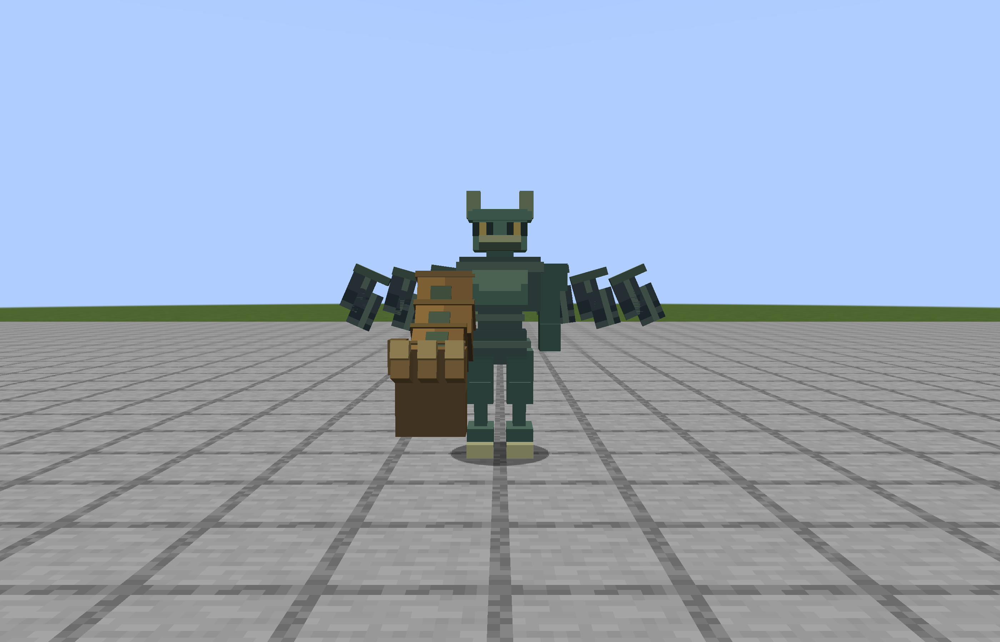
34-tongbi_feitian_yecha-hurt
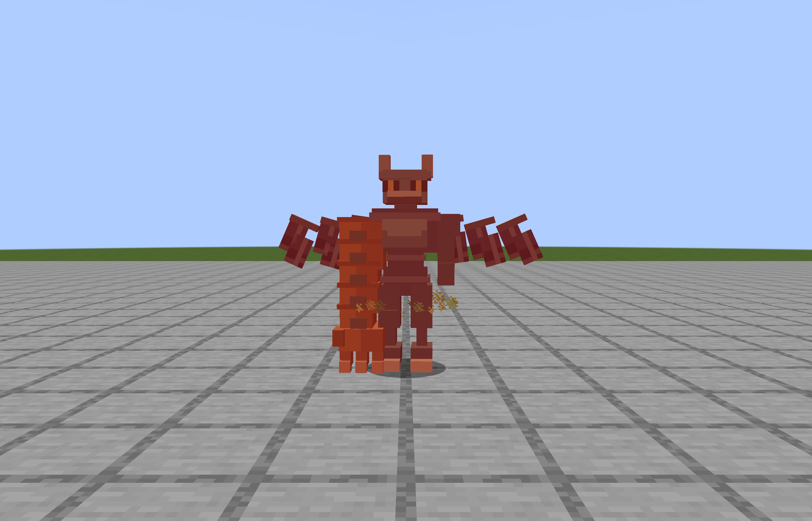
35-tongbi_feitian_yecha-death
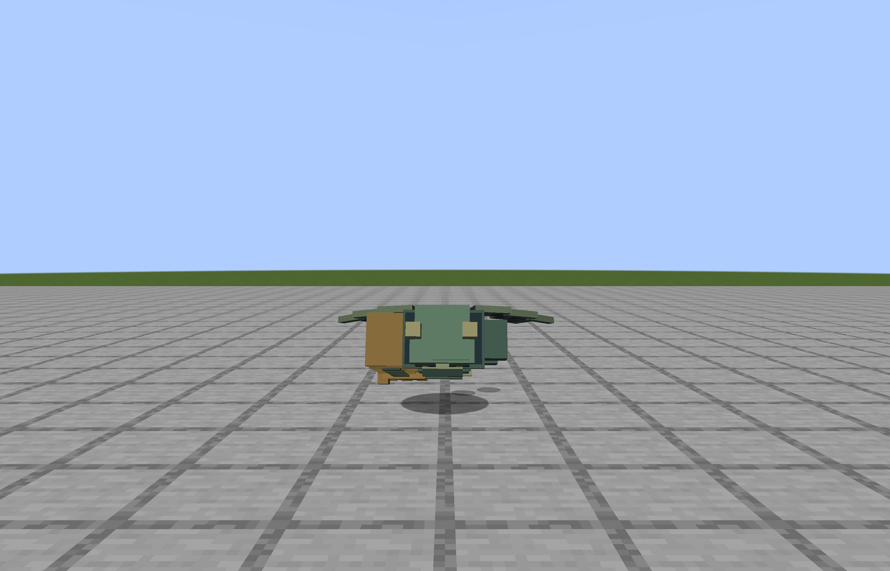
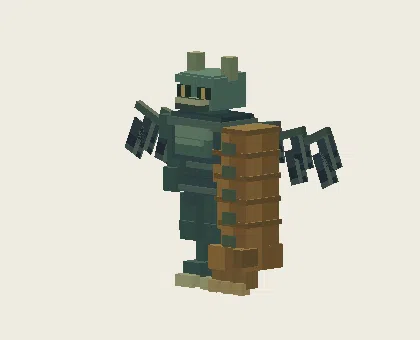
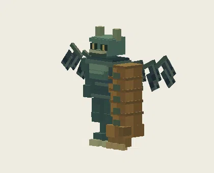
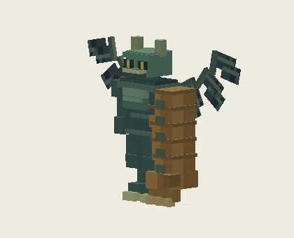
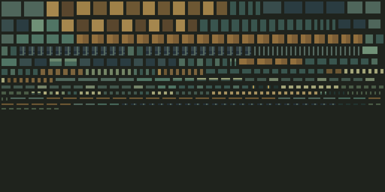
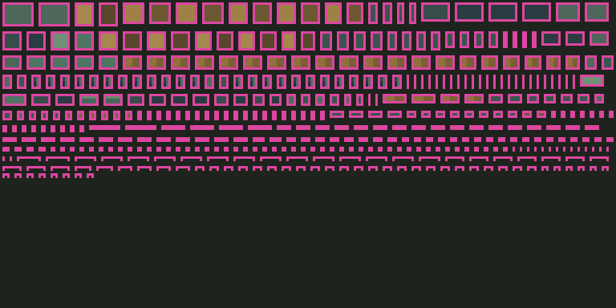